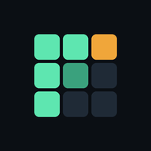

Privacy & Terms
Last updated 20 September 2026The short version
Fold is a poker training tool. You can use all of it without an account. We collect as little as we can, we don't sell anything to anyone, and there are no ads.
What is stored, and where
- Without an account: your scores, leaks and settings are stored only in your browser, on your device. They never leave it. Clearing your browser data, or "Reset my progress" in the app, removes them.
- If you sign in (optional, with Google or Apple): we receive your email address and a user ID from that provider, and we store a copy of your training progress (scores, answer history by situation, settings) so it follows you between devices. We never see or store your Google or Apple password.
- Hosting: the site is served by Cloudflare and accounts are stored with Supabase. Like any web host they process technical data such as IP addresses to deliver and protect the service.
We don't use advertising trackers or sell or share your data for marketing. Fold involves no real-money play, deposits or payments.
Sharing
When you share a hand or puzzle, the link contains only which hand it was and the score you chose to share. It contains nothing that identifies you.
Your choices
- Sign out any time; your progress stays on the device.
- Delete my account (in the app, under You) removes your account and your saved progress from our servers immediately.
- For anything else, including a copy of your data, email gtarpenning@gmail.com.
Terms
Fold is for education and entertainment. Strategy shown comes from solver simulations of simplified games and is not a guarantee of results at a real table. Fold is not a gambling service and is intended for adults. The service is provided as is, without warranty, and may change or go offline. Please don't abuse or attempt to disrupt it.
Changes
If this page changes in a way that matters, the date above changes and signed-in users will see a note in the app.